｢次｣と｢続き｣が生まれる
クリエイティブプラットフォーム
クリエイターとユニットの橋渡しになる
BAUS( バウス )はクリエイターやユニットが自発的に未来に向けて橋を架けるプラットフォームです。 企業、団体、個人などのあらゆる作り手が社会とつながり、所属や業種に囚われる事なくプロジェクト特化型のクリエイティブチームを構築します。
また、就職や起業など強固な連携を必要とする長期的なチーム形成を実現することも自在です。
BAUSに登録し、より柔軟に、よりコラボレーティブに、それぞれの理想の環境で新たなクリエイティブを社会に生み出していきましょう。

メールアドレスをご登録いただいた方に、BAUS（バウス）に関する情報をいち早くお届けします。


BAUSではクリエイティブプラットフォームとして、クリエイターとユニットをつなぐための機会が大きく3つあります。
すべてのコンテンツはユニット（企業・団体）・クリエイター（個人）に関わらず掲載・応募いただけます。
ユーザータイプ